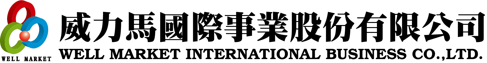
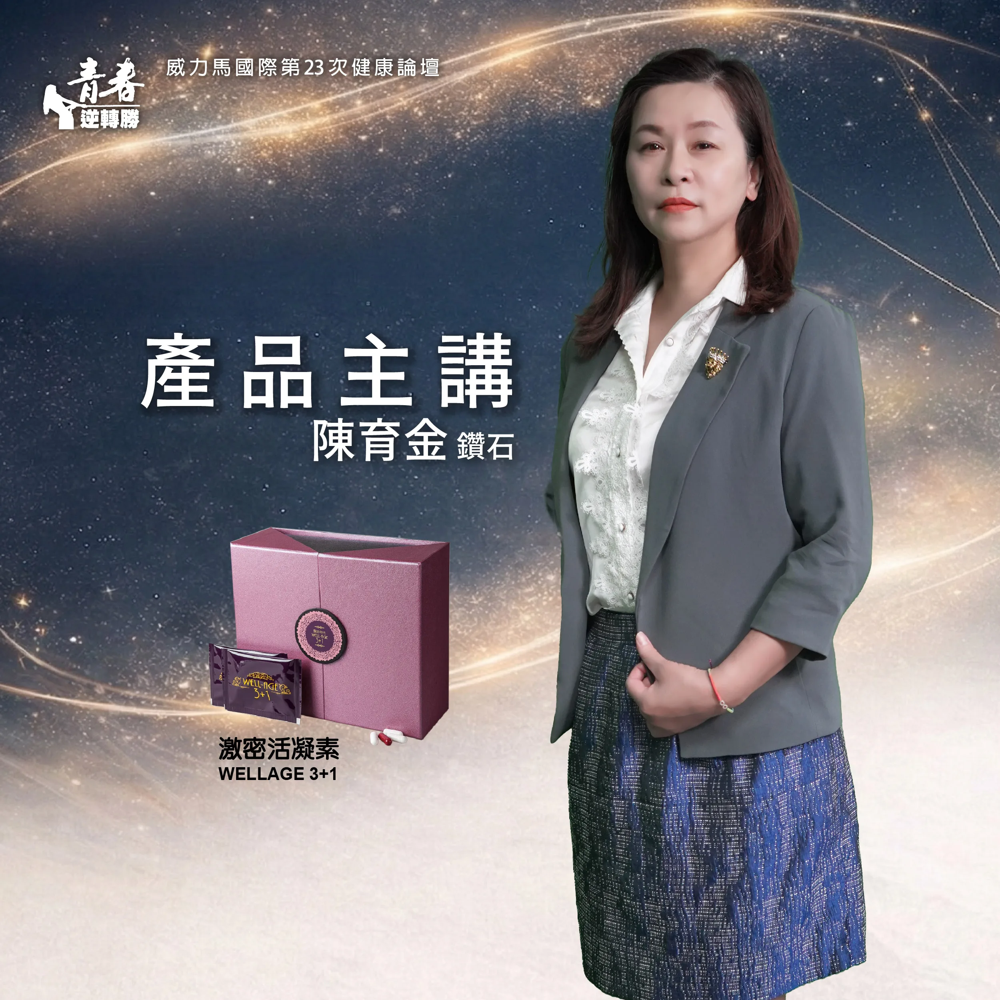
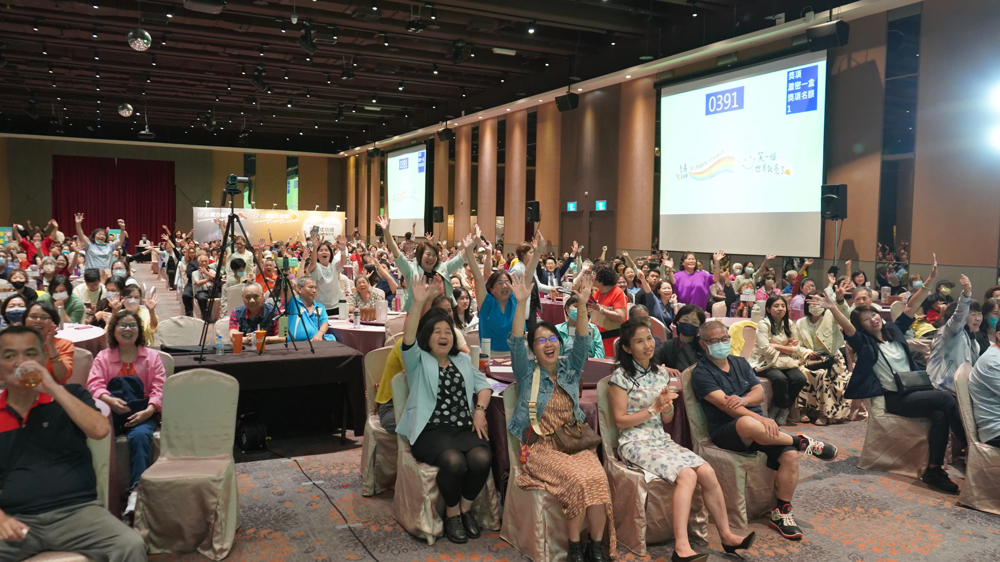
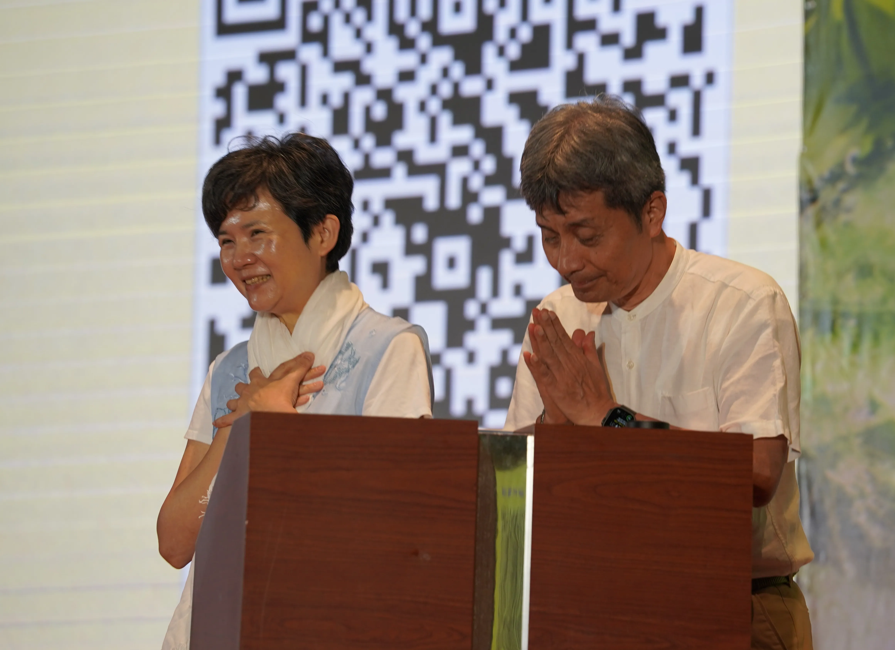
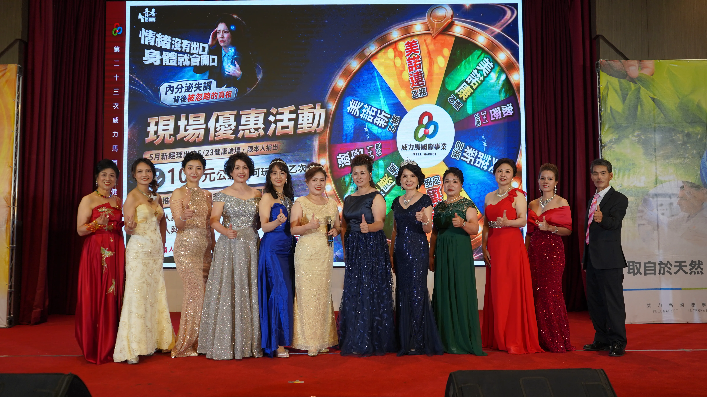
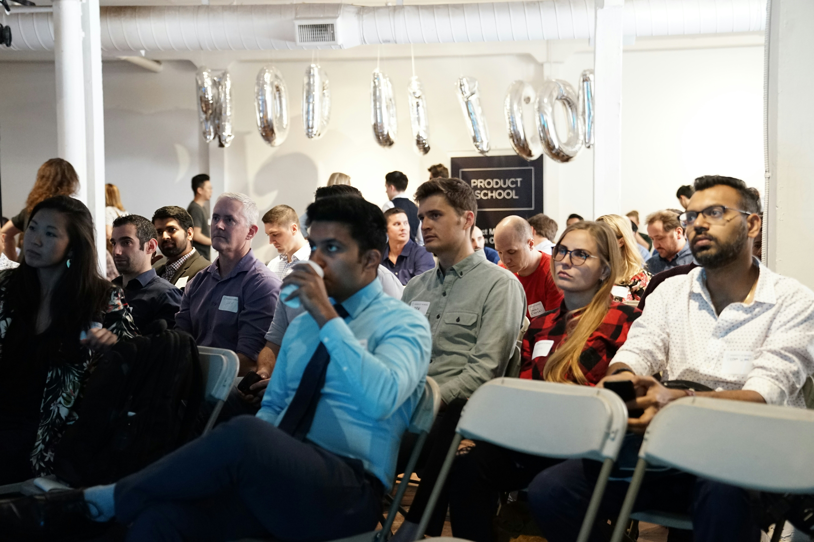
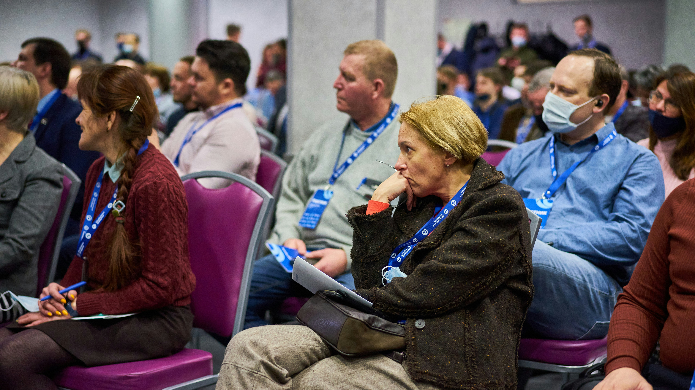

Ticket Benefit I
憑券免費兌換
活動當天出示票券，即可免費兌換 激密活凝素裸包 3 包。

主講醫師 / Clinical Perspective
從醫師觀點出發，說明壓力與睡眠、代謝、荷爾蒙及情緒穩定之間的關聯， 協助夥伴提早看見身體訊號，在日常中建立更完整的健康覺察。
.webp)
Keynote Doctor
本次健康論壇邀請心能量管理中心執行長許瑞云醫師，以及心能量管理中心院長鄭先安醫師， 從醫學、身心能量與全人照護角度，帶領夥伴重新理解情緒壓力、身體訊號與內分泌失衡之間的關聯。
票券優惠 / Ticket Notice
本區整理第 23 次健康論壇票券相關優惠，協助會員與團隊提前掌握兌換、摸彩與加購資訊。 實際兌換方式、適用條件與活動細節，仍以公司正式公告及現場說明為準。
Ticket Benefit I
活動當天出示票券，即可免費兌換 激密活凝素裸包 3 包。
Ticket Benefit II
活動當天可參加威力好禮摸彩， 有機會獲得 激密活凝素 10 盒。
Ticket Benefit III
5/23 至 5/30 期間，於北中營業處出示活動票券， 即可以 4,800 元（2,500PV） 加購美諾康、新、遠優惠套組。每張訂單限加購 2 組。
Event Gift
活動當天現場將提供精緻點心盒，實際內容以現場提供為準。 本頁僅展示票券優惠資訊，不提供購票、報名或預訂功能。
前導短影音 / Short-form Stories
前導短影音延續「情緒沒有出口，身體就會開口」的主題， 從日常壓力、疲憊與身體警訊切入，陪伴夥伴在活動前先看見： 有些不舒服並非偶然，而是身體正在提醒我們，該停下來好好聽一聽。
一段看似平常的生活壓力，可能正在透過睡不好、容易疲倦、胸悶、心悸或消化不適慢慢浮現。 這支前導短影音，想提醒我們：身體的反應不是小題大作，而是值得被理解與照顧的訊號。
主持 / 主講 / 分享陣容
本次健康論壇以醫師主講為核心，從情緒壓力、身體訊號與內分泌失衡切入； 也透過產品與事業夥伴的真實分享，讓健康不再只是知識， 而是回到生活、身體與人與人之間的支持。

擔任本次健康論壇主持人，以穩定而溫暖的節奏串聯醫師主講、產品觀點與夥伴分享。 她讓每一段內容不只是被聽見，也能自然走進現場每一位夥伴的生活經驗裡。

從產品觀點出發，帶領夥伴理解 3+1 與日常健康照護之間的關聯。 讓產品不只是被介紹，而是成為看懂身體訊號、建立健康習慣的一種入口。

由陳諭葳、黃孟蓁、林愛呈、阮詩翃、吳哲村分享產品使用、生活觀察與健康感受。 他們從自己的身體經驗出發，讓產品分享不只是心得， 也成為一段重新照顧自己的真實紀錄。

由楊銘琪、鄧美蘭、古瑞完、張玫瑰、張沁嵐分享事業推進與團隊經營經驗。 從使用者到分享者，他們把健康觀察、生活改變與事業選擇串連起來， 讓一份產品經驗延伸成更多人的健康支持。
新經理優惠 / Manager Notice
5 月新經理出席第 23 次健康論壇，不只參與健康主題學習，也能透過現場公益金與轉盤活動， 為自己開啟第一份健康行動，也為團隊帶回一份正向能量。

場外活動 / Beyond the Stage
本次健康論壇規劃場外闖關活動，透過「壓力粉碎鐘」與「能量九宮格」兩大互動關卡， 讓參與者在進場前先從情緒、身體與健康期待出發，重新觀察自己的日常狀態。
最近是不是覺得壓力有點大、肩膀有點重？第一關邀請參與者挑選最想釋放的壓力訊號， 大力敲響銅鐘，替累積的疲勞與情緒找到出口。
第二關化身健康神射手，喊出自己的三個健康願望，再用球砸向目標。 從吃得好、睡得好、走得動到氣力足，讓健康期待變成可以參與的現場行動。
完成兩關後，現場捐 100 元給「希望書包」做公益，即可帶走限量精緻環保杯套。 自己紓壓、拿實用好物，也把一份愛心送出去。
活動紀錄 / Forum Archive
從主講醫師的專業觀點、夥伴的真實分享，到場外闖關互動與會後花絮， 第 23 次健康論壇記錄的不只是活動過程， 更是每一位參與者重新理解身體、照顧自己與分享健康的片刻。

Photo Record
收錄活動當天的主講現場、真實分享、場外互動與夥伴合影。
讓知識交流、健康覺察與現場溫度，都成為可以回看的紀錄。


.webp)


VideoVideo Record
活動現場影片與重點片段將依素材狀況陸續上架， 方便夥伴回顧論壇內容與現場氛圍。

Highlights
後續將剪輯活動花絮、精彩片段與回顧內容， 讓活動現場的溫度與感動能持續被看見。
Update Notice
本區為第 23 次健康論壇活動紀錄區。
現場照片與影片將依整理進度陸續更新；
會後花絮、精彩片段或相關回顧內容完成後，也將持續補上。